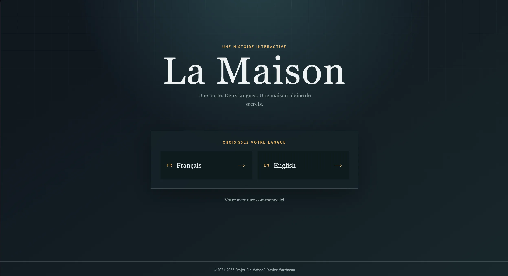

Portfolio de Xavier Martineau
Je construis des expériences
qui marquent les esprits.
Je crée des sites, des visuels et des projets numériques qui me permettent de mélanger technique et créativité.
Disponible pour de nouveaux projets
4+
Années d'expérience
40+
Projets livrés
// Projets en vedette
Mes meilleures réalisations

Animation & 3D
Un générique de fin plongé dans une ambiance sombre, teintée de rouge, où chaque élément renforce la tension et la dernière note dramatique de l’histoire.

La Maison
Un site web narratif qui plonge l'utilisateur dans une maison mystérieuse, où l'exploration et les choix déterminent le chemin à suivre.
Stitch
Une illustration vectorielle de Stitch aux couleurs vives, construite avec des formes simples, des lignes nettes et une composition expressive.